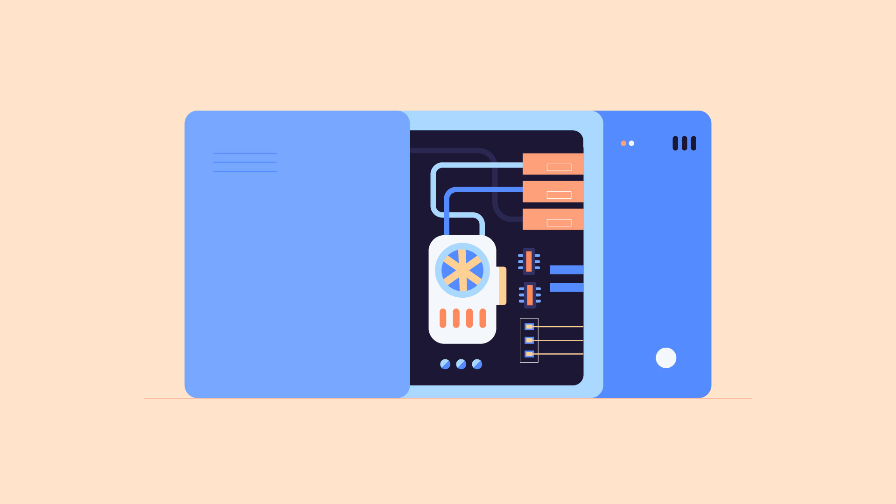
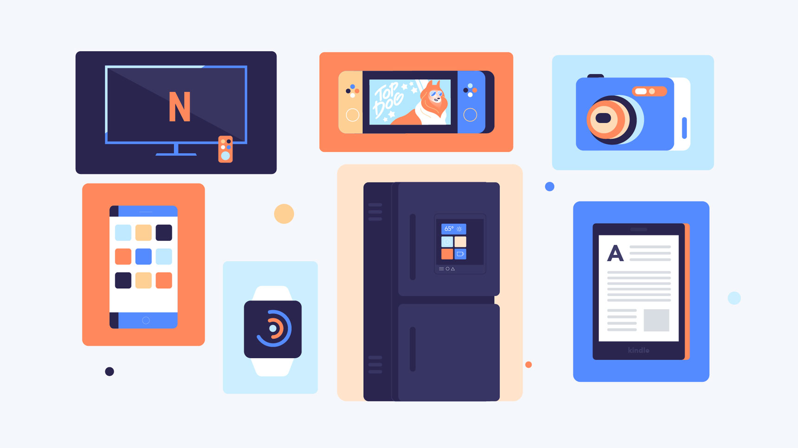
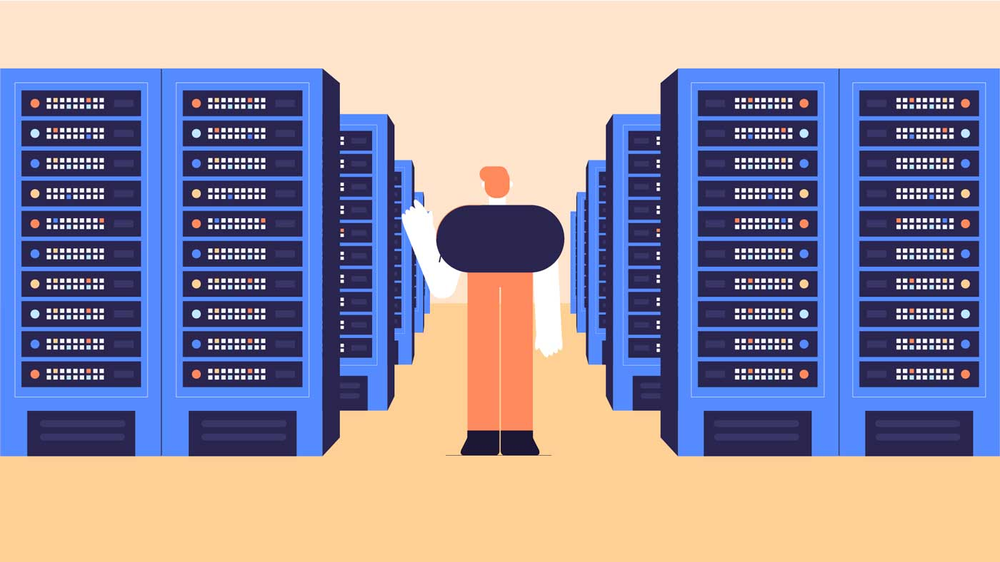

PC and Laptops
What is a computer?
A computer is an electronic device that manipulates information, or data. It has the ability to store, retrieve, and process data. You may already know that you can use a computer to type documents, send email, play games, and browse the Web. You can also use it to edit or create spreadsheets, presentations, and even videos.
Hardware vs. software
Before we talk about different types of computers, let's talk about two things all computers have in common: hardware and software.
Hardware is any part of your computer that has a physical structure, such as the keyboard or mouse. It also includes all of the computer's internal parts, which you can see in the image below.

Software is any set of instructions that tells the hardware what to do and how to do it. Examples of software include web browsers, games, and word processors.
Everything you do on your computer will rely on both hardware and software. For example, right now you may be viewing this lesson in a web browser (software) and using your mouse (hardware) to click from page to page. As you learn about different types of computers, ask yourself about the differences in their hardware. As you progress through this tutorial, you'll see that different types of computers also often use different types of software.
What are the different types of computers?
When most people hear the word computer, they think of a personal computer such as a desktop or laptop. However, computers come in many shapes and sizes, and they perform many different functions in our daily lives. When you withdraw cash from an ATM, scan groceries at the store, or use a calculator, you're using a type of computer.

Desktop computers
Many people use desktop computers at work, home, and school. Desktop computers are designed to be placed on a desk, and they're typically made up of a few different parts, including the computer case, monitor, keyboard, and mouse.
Laptop computers
The second type of computer you may be familiar with is a laptop computer, commonly called a laptop. Laptops are battery-powered computers that are more portable than desktops, allowing you to use them almost anywhere.
Tablet computers
Tablet computers—or tablets—are handheld computers that are even more portable than laptops. Instead of a keyboard and mouse, tablets use a touch-sensitive screen for typing and navigation. The iPad is an example of a tablet.
Servers

A server is a computer that serves up information to other computers on a network. For example, whenever you use the Internet, you're looking at something that's stored on a server. Many businesses also use local file servers to store and share files internally.